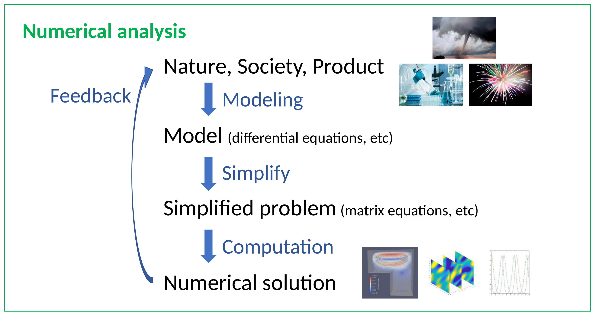
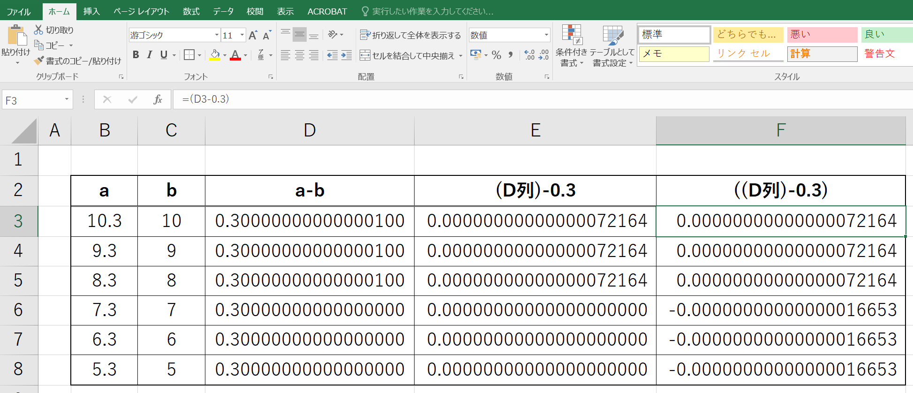

Numerical Analysis
Foundations and Exercises
Institute for Mathematical Science, Waseda University
Before We Start
git clone https://github.com/waseda-num-analysis-2026/materialscd materials
git pull💡 Not sure how? Just ask your AI — it can run these commands for you.
020/2nd/:
2nd.qmd |
slides (this file) |
2nd.html |
rendered slides — viewable in browser |
2nd-handout.qmd |
editable handout — customise it! |
2nd-handout.html |
rendered handout — viewable in browser |
020/python_guidelines/: Python Guidelines document & notebook.
⚠️ GitHub Copilot Student — Important Update
Source: GitHub Changelog — Apr 20, 2026
If Copilot Is Not Available — Alternatives
2nd-handout.qmd into a thread → ask questions in the same thread.I personally find Gemini handy — but it depends on the task.
What is Numerical Analysis?
that cannot be solved analytically
Process of Numerical Analysis

A Very Simple Application
What is the radius of the circle whose area is \(2\) ?
\[\pi r^2 = 2 \quad\Longrightarrow\quad r = \sqrt{\dfrac{2}{\pi}}\]
\(r = \sqrt{2/\pi} \text{ m}\)
…but can you draw this with a ruler?
\(r \approx 0.797 \text{ m}\)
→ You can measure this. Engineering becomes possible.
Errors in Numerical Computation
Can you trust your computer’s arithmetic?
\[10^{40} + 500 - 10^{40} = \;?\]
\[8.3 - 8 = \;?\]

Q. What is the value of \(x\)?
So… why?
Types of Errors
Age Estimator (1)

\[\text{Error} = |67.1 - 67| = 0.1 \text{ million years} = 100{,}000 \text{ years}\]
Age Estimator (2)
\[\text{Error} = |100{,}037 - 37| = 100{,}000 \text{ years}\]
Absolute Error and Relative Error — Definition
Let \(x\) be the true value and \(\hat{x}\) be its approximation.
Absolute Error (or simply, Error): \[ |x - \hat{x}| \]
Relative Error (for \(x \neq 0\)): \[ \left|\dfrac{x - \hat{x}}{x}\right| \quad\left(\;\approx \left|\dfrac{x - \hat{x}}{\hat{x}}\right|\;\right) \]
Absolute Error and Relative Error
\(= 100{,}000\)
\(= 100{,}000\)
Error Propagation & Cancellation
Exercise 2.1 — Absolute / Relative Error Functions
Repository: Ex 2 — GitHub Classroom | Edit: ex2-1.qmd | Deadline: Apr 24 (today), 23:59
Write two Python functions that take two real numbers and return the absolute error and the relative error, respectively:
abs_error(a, b)— \(|a - b|\)rel_error(a, b)— \(|a - b| / |a|\)
where a is the true value and b is the approximate value.
Test your functions on at least 3 pairs of your own choice (e.g. compare math.pi with truncated decimals).
Exercise 2.2 — Cancellation in \(\dfrac{1}{1-\sqrt{x}}\)
Repository: same as Ex 2.1 | Edit: ex2-2.qmd | Deadline: Apr 24 (today), 23:59
Consider \(\;f(x) = \dfrac{1}{1 - \sqrt{x}}\), which becomes numerically unstable as \(x \to 1\).
- Implement the function
f1(x)exactly as given. - Derive an algebraically equivalent but more stable expression and implement it as
f2(x). - Compare
f1(x)andf2(x)for \(x = 0.9,\ 0.99,\ 0.999,\ 0.9999,\ 0.99999\). - Report the relative difference between the two implementations for each \(x\).
Hint. Rationalize the denominator: multiply numerator and denominator by \(1 + \sqrt{x}\).
Exercise 2.3 — Quadratic Equation without Cancellation
Edit: ex2-3.qmd (same repo as Ex 2.1) | Deadline: Apr 30 (Wed), 23:59
Implement solve_quadeq(a, b, c) returning the two solutions of \(ax^2 + bx + c = 0\ (a \neq 0)\), avoiding cancellation as much as possible.
Apply to: \[ \begin{aligned} &a = 1,\ b = 10^{15},\ c = 10^{14} \\ &a = 1,\ b = -10^{15},\ c = 10^{14} \end{aligned} \]
Then discuss:
- Why the standard formula suffers from cancellation here
- How your implementation avoids it
- Compare accuracy with the direct formula
📝 Plus: a 5-min video — upload to YouTube unlisted (recommended) or any link-shareable service (Drive / Dropbox / OneDrive / …) and paste the URL into ex2-3.qmd.
Peer-reviewed next class — see next slide for the rubric.
Assignments and Preparation for Next Lecture
Accept the Ex 2 GitHub Classroom link once — you get one repository containing all three exercises
- Edit
ex2-1.qmd,ex2-2.qmd,ex2-3.qmd(all.qmd, no.ipynb) - Ex 2.1 & 2.2: Apr 24 (today), 23:59
- Ex 2.3: Apr 30 (Wed), 23:59
- Submit by
git push— the last commit before each deadline is graded
Record a 5-minute explanatory video for Ex 2.3 and paste its URL into ex2-3.qmd
- YouTube unlisted (限定公開) recommended; otherwise any link-shareable service (Google Drive, Dropbox, OneDrive, …)
- Use Zoom, QuickTime, or OBS to record
- Do not commit the MP4 file directly to the repository — paste a URL instead
Next class: "pair work" for Ex 2.3
- You will be assigned to pairs (announced later)
- Each person will watch the partner's video
- Discuss strengths and areas for improvement together
- Both members submit separate feedback sheets
- 📻 Please bring your earphones
- Accuracy & Depth of Content
- Clarity of Explanation
- Structure & Time Management
- Audience Engagement
- Effective Use of Visual Aids